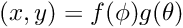
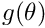
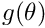

WCSLIB's API is vector-oriented. At the least, this allows the function call overhead to be amortised by spreading it over multiple coordinate transformations. However, vector computations may provide an opportunity for caching intermediate calculations and this can produce much more significant efficiencies. For example, many of the spherical projection equations are partially or fully separable in the mathematical sense, i.e. , so if  was invariant for a set of coordinate transformations then  would only need to be computed once. Depending on the circumstances, this may well lead to speedups of a factor of two or more.
was invariant for a set of coordinate transformations then  would only need to be computed once. Depending on the circumstances, this may well lead to speedups of a factor of two or more.
WCSLIB has two different categories of vector API:
- Certain steps in the WCS algorithm chain operate on coordinate vectors as a whole rather than particular elements of it. For example, the linear transformation takes one or more pixel coordinate vectors, multiples by the transformation matrix, and returns whole intermediate world coordinate vectors.
The routines that implement these steps, wcsp2s(), wcss2p(), linp2x(), linx2p(), tabx2s(), tabs2x(), disp2x() and disx2p() accept and return two-dimensional arrays, i.e. a number of coordinate vectors. Because WCSLIB permits these arrays to contain unused elements, three parameters are needed to describe them:- naxis: the number of coordinate elements, as per the FITS
NAXISorWCSAXESkeyvalues, - ncoord: the number of coordinate vectors,
- nelem: the total number of elements in each vector, unused as well as used. Clearly, nelem must equal or exceed naxis. (Note that when ncoord is unity, nelem is irrelevant and so is ignored. It may be set to 0.)
- naxis: the number of coordinate elements, as per the FITS
ncoord and nelem are specified as function arguments while naxis is provided as a member of the wcsprm (or linprm or disprm) struct.
For example, wcss2p() accepts an array of world coordinate vectors, world[ncoord][nelem]. In the following example, naxis = 4, ncoord = 5, and nelem = 7:
s1 x1 y1 t1 u u u
s2 x2 y2 t2 u u u
s3 x3 y3 t3 u u u
s4 x4 y4 t4 u u u
s5 x5 y5 t5 u u uwhere u indicates unused array elements, and the array is laid out in memory as
s1 x1 y1 t1 u u u s2 x2 y2 ...
Note that the stat[] vector returned by routines in this category is of length ncoord, as are the intermediate phi[] and theta[] vectors returned by wcsp2s() and wcss2p().
Note also that the function prototypes for routines in this category have to declare these two-dimensional arrays as one-dimensional vectors in order to avoid warnings from the C compiler about declaration of "incomplete
types". This was considered preferable to declaring them as simple pointers-to-double which gives no indication that storage is associated with them.
- Other steps in the WCS algorithm chain typically operate only on a part of the coordinate vector. For example, a spectral transformation operates on only one element of an intermediate world coordinate that may also contain celestial coordinate elements. In the above example, spcx2s() might operate only on the s (spectral) coordinate elements.
Routines like spcx2s() and celx2s() that implement these steps accept and return one-dimensional vectors in which the coordinate element of interest is specified via a starting address, a length, and a stride. To continue the previous example, the starting address for the spectral elements is s1, the length is 5, and the stride is 7.
Vector lengths
Routines such as spcx2s() and celx2s() accept and return either one coordinate vector, or a pair of coordinate vectors (one-dimensional C arrays). As explained above, the coordinate elements of interest are usually embedded in a two-dimensional array and must be selected by specifying a starting point, length and stride through the array. For routines such as spcx2s() that operate on a single element of each coordinate vector these parameters have a straightforward interpretation.
However, for routines such as celx2s() that operate on a pair of elements in each coordinate vector, WCSLIB allows these parameters to be specified independently for each input vector, thereby providing a much more general interpretation than strictly needed to traverse an array.
This is best described by illustration. The following diagram describes the situation for cels2x(), as a specific example, with nlng = 5, and nlat = 3:
lng[0] lng[1] lng[2] lng[3] lng[4]
------ ------ ------ ------ ------
lat[0] | x,y[0] x,y[1] x,y[2] x,y[3] x,y[4]
lat[1] | x,y[5] x,y[6] x,y[7] x,y[8] x,y[9]
lat[2] | x,y[10] x,y[11] x,y[12] x,y[13] x,y[14]
In this case, while only 5 longitude elements and 3 latitude elements are specified, the world-to-pixel routine would calculate nlng * nlat = 15 (x,y) coordinate pairs. It is the responsibility of the caller to ensure that sufficient space has been allocated in all of the output arrays, in this case phi[], theta[], x[], y[] and stat[].
Vector computation will often be required where neither lng nor lat is constant. This is accomplished by setting nlat = 0 which is interpreted to mean nlat = nlng but only the matrix diagonal is to be computed. Thus, for nlng = 3 and nlat = 0 only three (x,y) coordinate pairs are computed:
lng[0] lng[1] lng[2]
------ ------ ------
lat[0] | x,y[0]
lat[1] | x,y[1]
lat[2] | x,y[2]
Note how this differs from nlng = 3, nlat = 1:
lng[0] lng[1] lng[2]
------ ------ ------
lat[0] | x,y[0] x,y[1] x,y[2]
The situation for celx2s() is similar; the x-coordinate (like lng) varies fastest.
Similar comments can be made for all routines that accept arguments specifying vector length(s) and stride(s). (tabx2s() and tabs2x() do not fall into this category because the -TAB algorithm is fully N-dimensional so there is no way to know in advance how many coordinate elements may be involved.)
The reason that WCSLIB allows this generality is related to the aforementioned opportunities that vector computations may provide for caching intermediate calculations and the significant efficiencies that can result. The high-level routines, wcsp2s() and wcss2p(), look for opportunities to collapse a set of coordinate transformations where one of the coordinate elements is invariant, and the low-level routines take advantage of such to cache intermediate calculations.
Vector strides
As explained above, the vector stride arguments allow the caller to specify that successive elements of a vector are not contiguous in memory. This applies equally to vectors given to, or returned from a function.
As a further example consider the following two arrangements in memory of the elements of four (x,y) coordinate pairs together with an s coordinate element (e.g. spectral):
- x1 x2 x3 x4 y1 y2 y3 y4 s1 s2 s3 s4
the address of x[] is x1, its stride is 1, and length 4,
the address of y[] is y1, its stride is 1, and length 4,
the address of s[] is s1, its stride is 1, and length 4. - x1 y1 s1 x2 y2 s2 x3 y3 s3 x4 y4 s4
the address of x[] is x1, its stride is 3, and length 4,
the address of y[] is y1, its stride is 3, and length 4,
the address of s[] is s1, its stride is 3, and length 4.
For routines such as cels2x(), each of the pair of input vectors is assumed to have the same stride. Each of the output vectors also has the same stride, though it may differ from the input stride. For example, for cels2x() the input lng[] and lat[] vectors each have vector stride sll, while the x[] and y[] output vectors have stride sxy. However, the intermediate phi[] and theta[] arrays each have unit stride, as does the stat[] vector.
If the vector length is 1 then the stride is irrelevant and so ignored. It may be set to 0.